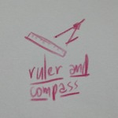
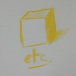
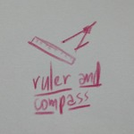
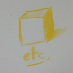
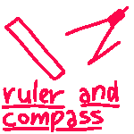
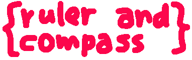
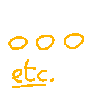

You open the folder to find... more folders. And a sticky note saying that basically all the html pages use other fonts, so it might take a bit to load them depending on your connection. And another one saying these pages may not be screenreader friendly.
index(es)
- index: the earliest version, with rounded corners.
- index2: a version with a sidebar and descriptions for pages.
- index3: a simpler version without a sidebar.
- index4: an even simpler version designed for mobile first.
- index5: a landing page that then led to the main index (index4).
- building: the first image i meant to put on the above welcome page.
- index6: a combination of the simple design with a sidebar and a new font.
- index7: another version but with more details like shadows and a blue tint.
- index8: yet another verion, but with glowing rectangles and back to dark mode.
{kind=link}
handdrawn/doodles
When i originally made the handdrawn/doodles page, as the name suggested, everything was supposed to be handdrawn, even the text. But after trying to chroma key the text+drawings out (because i didn't want an ugly border in the images), once with black on white and then with black on green to see if it helped (it didn't, i suck at chroma key), i just gave up and had to settle for the separated text and drawing.
- try #1
- try #2
- original {handdrawn} page (Might take a while to load because of the large images)
{kind=link}
{kind=link}
since everything else was handdrawn (except for the text), the buttons were also supposed to be handdrawn, but the contrast sucked (especially the etc button) so i scrapped it for pixel-y gifs, and changed the header accordingly.
 



What i ended up using was these:


-


-

Also, during the 5th redesign, i tried to remake the buttons to be much smaller and easier to see, but i couldn't make it work right so i kept the big buttons.

But, now that i separate doodles based on the notebooks, these buttons are, sadly, obsolete now.
html/css experiments/other removed pages
- difference: a thing about the importance of difference. Moved it here because it... doesn't really fit. (Also i keep having to change this page every time i change the design of the site.) (and also because i now understand that difference isn't as important as equality.)
- blips: short poems in pages that, though i like the vibe of them, they don't display properly on mobile.
- nameless zine: refer to journal entry. Also the first time i used Work Sans!
- unprobable blog: the sole post in a blog i knew i wouldn't really keep posting on. so here it is.
- hi: hi
- ilo Katen: a toki pona diary entry thing from a future.
- fulepõhiné: a half-done crappy mostly a priori conlang, mostly just css practice.
miscellaneous images
buttons
With (almost) every site redesign came the need for a new button to match.

The first version with the dark theme and old font, Inter (a Helvetica clone).

A version with quicker timing and a light theme.

An unrounded version with the font Work Sans.
A version corresponding to index 7 with a blue tint and kinda-burned in effect, also with the new header font, Inconsolata.

A 200x40 button that took a while to make but looks pleasing!

A redone version of the blue button to look like the very first button (!)
dingus
The images i used in my about me and status.cafe pages.

The first version, done digitally, probably GIMP.
A version changed to fit the light theme, now handdrawn and transparent, the white comes from the background (like a daguerreotype kinda)

Another version, this time with my crappy hair!

The attempts at drawing the above thing, trying to get each line right ughh
An unused handdrawn image that was supposed to be used on my status.cafe but it doesn't... look particulalrly good.
The first image i actually used to kinda represent me in status.cafe.
The second version, now handdrawn again.
i originally put this in the blender page upstairs, but the contrast sucked so i took it out. now it's here.
another thing from the blenders, this time removed because it messed up the spacing.
a neat gif that used to be in the 404 page, but i removed it to keep it Simple.
a 3d version shortly used in the first attempt at the 7th redesign.